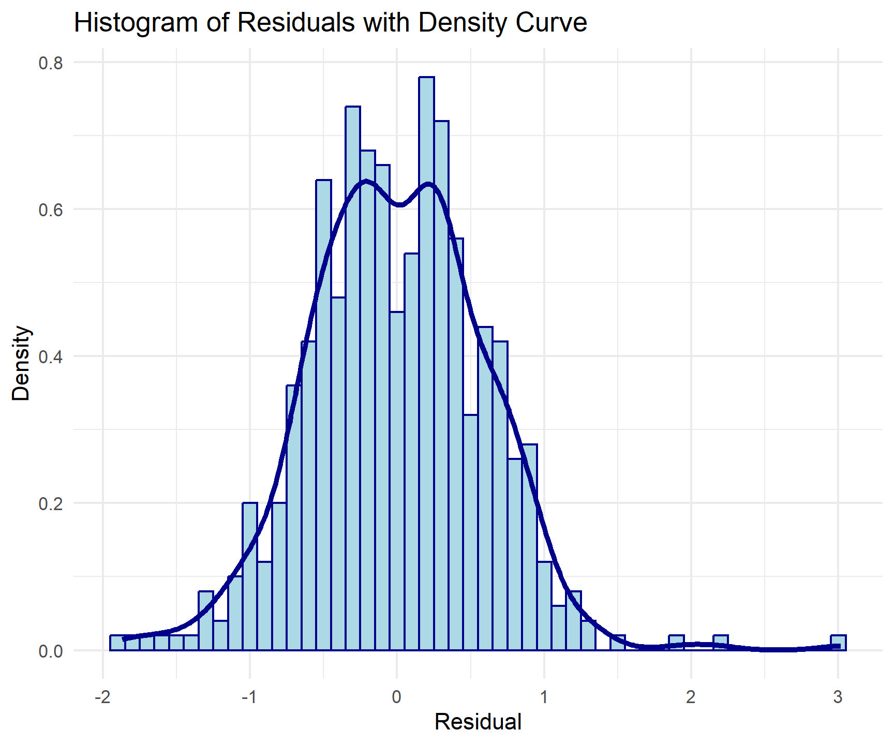

Code
# Reading in data
data <- read_csv('https://raw.githubusercontent.com/nytimes/covid-19-data/master/us-counties.csv')Public Health & Time: COVID Trends
read_csv (make sure to attach the tidyverse). The data read from Github is considered our “raw data”. Remember to always leave “raw-data-raw” and to generate meaningful subsets as you go.# Reading in data
data <- read_csv('https://raw.githubusercontent.com/nytimes/covid-19-data/master/us-counties.csv')my.date and set it as “2022-02-01” - ensure this is a date object.# Setting "current" date
my.date <- as.Date("2022-02-01")my.state and set it to “Colorado”.my.state <- "Colorado"filter), and add a new column (mutate) with the daily new cases using diff/lag by county (group_by). Do the same for new deaths. If lag is new to you, lag is a function that shifts a vector by a specified number of positions. The help file can be found with ?lag.(Hint: you will need some combination of filter, group_by, arrange, mutate, diff/lag, and ungroup)
# Subsetting data and creating daily cases/deaths variables
state_data <- data %>%
filter(state == my.state) %>%
arrange(date) %>%
group_by(county) %>%
mutate(
daily_new_cases = cases - lag(cases, order_by = date),
daily_new_deaths = deaths - lag(deaths, order_by = date)
) %>%
ungroup()my.date object as a proxy for today’s date:Your tables should have clear column names and descriptive captions.
(Hint: Use flextable::flextable() and flextable::set_caption())
# Table for top 5 counties based on CUMULATIVE cases
state_data %>%
filter(date == my.date) %>%
select(county, cases) %>%
slice_max(order_by = cases, n = 5) %>%
flextable() %>%
set_header_labels(
county = "County",
cases = "Total Cases"
) %>%
width(j = 1:2, 3) %>%
align(align = "center", part = "all") %>%
set_caption(paste("Top 5 ", my.state,
" Counties Based on Cumulative COVID-19 Cases on ",
my.date))County | Total Cases |
|---|---|
El Paso | 170,673 |
Denver | 159,022 |
Arapahoe | 144,255 |
Adams | 126,768 |
Jefferson | 113,240 |
# Table for top 5 counties based on NEW cases
state_data %>%
filter(date == my.date) %>%
select(county, daily_new_cases) %>%
slice_max(order_by = daily_new_cases, n = 5) %>%
flextable() %>%
set_header_labels(
county = "County",
daily_new_cases = "New Cases"
) %>%
width(j = 1:2, 3) %>%
align(align = "center", part = "all") %>%
set_caption(paste("Top 5 ",
my.state,
" Counties Based on New COVID-19 Cases on ",
my.date))County | New Cases |
|---|---|
El Paso | 630 |
Arapahoe | 401 |
Denver | 389 |
Adams | 326 |
Jefferson | 291 |
?dplyr::select). Additionally, remove all state level rows (e.g. COUNTY FIP == “000”)# Reading in populaton data
pop_data <- read_csv('https://www2.census.gov/programs-surveys/popest/datasets/2020-2023/counties/totals/co-est2023-alldata.csv', show_col_types = FALSE)
# Subsetting and creating new 5-digit FIPS column
pop_data_2021 <- pop_data %>%
mutate(fips = paste0(STATE,COUNTY)) %>%
filter(COUNTY != "000") %>%
select(fips, matches("NAME|2021"))# Exploring data
glimpse(pop_data_2021)Rows: 3,144
Columns: 19
$ fips <chr> "01001", "01003", "01005", "01007", "01009", "01…
$ STNAME <chr> "Alabama", "Alabama", "Alabama", "Alabama", "Ala…
$ CTYNAME <chr> "Autauga County", "Baldwin County", "Barbour Cou…
$ POPESTIMATE2021 <dbl> 59203, 239439, 24533, 22359, 59079, 10143, 18890…
$ NPOPCHG2021 <dbl> 288, 6212, -436, 171, -28, -86, -135, -565, -163…
$ BIRTHS2021 <dbl> 686, 2337, 270, 240, 654, 111, 227, 1250, 392, 2…
$ DEATHS2021 <dbl> 696, 2948, 390, 325, 875, 160, 297, 1843, 592, 4…
$ NATURALCHG2021 <dbl> -10, -611, -120, -85, -221, -49, -70, -593, -200…
$ INTERNATIONALMIG2021 <dbl> 15, 105, 0, 1, 9, 1, 5, 12, 22, 7, 20, 1, 0, -1,…
$ DOMESTICMIG2021 <dbl> 242, 6972, -313, 254, 141, -42, -75, -70, -6, 28…
$ NETMIG2021 <dbl> 257, 7077, -313, 255, 150, -41, -70, -58, 16, 29…
$ RESIDUAL2021 <dbl> 41, -254, -3, 1, 43, 4, 5, 86, 21, 2, 18, 7, 8, …
$ GQESTIMATES2021 <dbl> 484, 3351, 2248, 1994, 616, 1578, 285, 5407, 856…
$ RBIRTH2021 <dbl> 11.615503, 9.888589, 10.908650, 10.775136, 11.06…
$ RDEATH2021 <dbl> 11.78483, 12.47392, 15.75694, 14.59133, 14.80717…
$ RNATURALCHG2021 <dbl> -0.1693222, -2.5853351, -4.8482890, -3.8161941, …
$ RINTERNATIONALMIG2021 <dbl> 0.25398330, 0.44428836, 0.00000000, 0.04489640, …
$ RDOMESTICMIG2021 <dbl> 4.0975973, 29.5007468, -12.6459537, 11.4036860, …
$ RNETMIG2021 <dbl> 4.3515806, 29.9450352, -12.6459537, 11.4485824, …The modified Census dataset has 3,144 rows and 19 columns. Each row corresponds to one county in the U.S. The first three columns, “fips”, “STNAME”, and “CTYNAME”, are characters and contain identifying information for the county, namely the 5-digit FIPS code, state name, and county name, respectively. The other 16 columns are doubles and contain information about the county’s population in 2021, including the population estimate (“POPESTIMATE2021”), the number of births (BIRTHS2021) and deaths (DEATHS2021), domestic and international migration (DOMESTICMIG2021 and INTERNATIONALMIG2021, respectively), etc. as well as the rates of many of these variables (birth rate, death rate, etc.). For our analysis, I am interested in the population estimate. Luckily, the modified Census dataset and the COVID dataset have the same “fips” column, so I can join them by the county FIPS codes (they also share the same state name and county name columns - with the county columns in the Census data actually containing the word “County” after each county name - but it is more efficient to just join by the “fips” column since the name and codes are already the same across both datasets).
Join the population data to the Colorado COVID data and compute the per capita cumulative cases, per capita new cases, and per capita new deaths:
# Joining the datasets
covid_data <- inner_join(state_data, pop_data_2021, by = "fips")
# 64 missing obs. because the county is "Unknown" and FIPS code is NA
# Mutating
covid_data <- covid_data %>%
mutate(
cumulative_cases_per_capita = cases/POPESTIMATE2021,
daily_new_cases_per_capita = daily_new_cases/POPESTIMATE2021,
daily_new_deaths_per_capita = daily_new_deaths/POPESTIMATE2021
)Generate (2) new tables. The first should show the 5 counties with the most cumulative cases per capita on your date, and the second should show the 5 counties with the most NEW cases per capita on the same date. Your tables should have clear column names and descriptive captions.
(Hint: Use `flextable::flextable() and flextable::set_caption())
# Table for top 5 counties based on CUMULATIVE cases per capita
covid_data %>%
filter(date == my.date) %>%
select(county, cumulative_cases_per_capita) %>%
slice_max(order_by = cumulative_cases_per_capita, n = 5) %>%
flextable() %>%
set_header_labels(
county = "County",
cumulative_cases_per_capita = "Cumulative Cases per Capita"
) %>%
width(j = 1:2, 3) %>%
align(align = "center", part = "all") %>%
set_caption(
paste("Top 5 ",
my.state,
" Counties Based on Cumulative COVID-19 Cases per Capita on ",
my.date))County | Cumulative Cases per Capita |
|---|---|
Crowley | 0.5117698 |
Bent | 0.4118749 |
Pitkin | 0.3429659 |
Lincoln | 0.3424082 |
Logan | 0.3047701 |
# Table for top 5 counties based on NEW cases per capita
covid_data %>%
filter(date == my.date) %>%
select(county, daily_new_cases_per_capita) %>%
slice_max(order_by = daily_new_cases_per_capita, n = 5) %>%
flextable() %>%
set_header_labels(
county = "County",
daily_new_cases_per_capita = "New Cases per Capita"
) %>%
width(j = 1:2, 3) %>%
align(align = "center", part = "all") %>%
set_caption(
paste("Top 5 ",
my.state,
" Counties Based on New COVID-19 Cases per Capita on ",
my.date))County | New Cases per Capita |
|---|---|
Crowley | 0.009764603 |
Bent | 0.004120622 |
Sedgwick | 0.003869304 |
Washington | 0.002875924 |
Las Animas | 0.002651039 |
Filter the merged COVID/Population data for Colorado to only include the last 14 days. Remember this should be a programmatic request and not hard-coded.
covid_data_two_weeks <- covid_data %>%
filter(date >= my.date - 13 & date <= my.date)Then, use the group_by/summarize paradigm to determine the total number of new cases in the last 14 days per 100,000 people.
covid_data_two_weeks <- covid_data_two_weeks %>%
group_by(county) %>%
summarize(new_cases_per_100k = sum(daily_new_cases_per_capita, na.rm = TRUE) * 100000)Print a table of the top 5 counties (consider slice_max), and, report the number of counties that meet the watch list condition: “More than 100 new cases per 100,000 residents over the past 14 days…”
(Hint: Dates are numeric in R and thus operations like max min, -, +, >, and< work.)
covid_data_two_weeks %>%
slice_max(order_by = new_cases_per_100k, n = 5) %>%
select(county, new_cases_per_100k) %>%
flextable() %>%
set_header_labels(
county = "County",
new_cases_per_100k = "New Cases per 100,000 Residents"
) %>%
width(j = 1:2, 3) %>%
align(align = "center", part = "all") %>%
set_caption(
paste("Top 5 ",
my.state,
" Counties Based on New COVID-19 Cases per 100,000 Residents Over the Past 14 Days"))County | New Cases per 100,000 Residents |
|---|---|
Crowley | 3,923.278 |
Lincoln | 3,599.488 |
Alamosa | 3,594.909 |
Mineral | 3,336.921 |
Conejos | 3,152.203 |
n_watch <- as.character(nrow(covid_data_two_weeks %>% filter(new_cases_per_100k > 100)))
print(paste(n_watch, "counties meet watch list condition number 2 (more than 100 new cases per 100,000 residents over the past 14 days...)."))[1] "64 counties meet watch list condition number 2 (more than 100 new cases per 100,000 residents over the past 14 days...)."Given we are assuming it is February 1st, 2022. Your leadership has now asked you to determine what percentage of deaths in each county were attributed to COVID last year (2021). You eagerly tell them that with the current Census data, you can do this!
From previous questions you should have a data.frame with daily COVID deaths in Colorado and the Census based, 2021 total deaths. For this question, you will find the ratio of total COVID deaths per county (2021) of all recorded deaths. In a plot of your choosing, visualize all counties where COVID deaths account for 20% or more of the annual death toll.
# Extracting death information
covid_data_2021 <- covid_data %>%
mutate(year = lubridate::year(date)) %>%
filter(year == 2021) %>%
group_by(county) %>%
mutate(covid_deaths = sum(daily_new_deaths)) %>%
ungroup() %>%
select(county, fips, year, covid_deaths, DEATHS2021) %>%
unique() %>%
mutate(pct_covid_deaths = (covid_deaths/DEATHS2021)*100)
# Plotting
covid_data_2021 %>%
filter(pct_covid_deaths >= 20) %>%
ggplot(aes(x = county, y = pct_covid_deaths)) +
geom_bar(stat = "identity") +
theme_minimal() +
labs(
title = paste(my.state,
"Counties with at least 20% of 2021 Deaths due to COVID-19"),
x = "County",
y = "Percentage of Death Toll Attributed to COVID"
) +
theme(axis.text.x = element_text(angle = 45, hjust = 1)) Congratulations! You have been promoted to the National COVID-19 Task Force.As part of this exercise, you have been tasked with building analysis to compare states to each other.
In this question, we are going to look at the story of 4 states and the impact scale can have on data interpretation. The states include: New York, Colorado, Alabama, and Ohio.
Your task is to make a faceted bar plot showing the number of daily, new cases at the state level.
group/summarize our county level data to the state level, filter it to the four states of interest, and calculate the number of daily new cases (diff/lag) and the 7-day rolling mean.# Subsetting data
states <- c("Alabama", "Colorado", "New York", "Ohio")
multistate_data <- data %>%
filter(state %in% states) %>%
group_by(state, date) %>%
mutate(total_cases = sum(cases, na.rm = TRUE),
total_deaths = sum(deaths, na.rm = TRUE)) %>%
ungroup() %>%
select(date, state, total_cases, total_deaths) %>%
unique()
# Calculating the number of daily new cases and 7-day rolling mean
## We want the mean of the past 7 days, so align = "right"
multistate_data <- multistate_data %>%
group_by(state) %>%
mutate(daily_new_cases = total_cases - lag(total_cases, order_by = date),
new_case_rolling_mean = zoo::rollmean(daily_new_cases, k = 7, fill = NA, align = "right")) %>%
ungroup()# I filter for observations where daily_new_cases >= 0 because some are negative and this is a little misleading.
# The cumulative cases should always be increasing, but in some cases they are not (this is a feature of the raw data).
# For the daily cases to reflect the change in the cumulative case count over a period of time, the negative values should remain.
state_facet_plot <- multistate_data %>% filter(daily_new_cases >= 0) %>%
ggplot(aes(x = date)) +
geom_bar(mapping = aes(y = daily_new_cases),
stat = "identity",
fill = "grey70") +
geom_line(mapping = aes(y = new_case_rolling_mean,
color = "7-Day Rolling Average")) +
facet_wrap(~state) +
labs(title = "Comparing Daily New COVID-19 Cases Across States",
x = "Date",
y = "Daily New Cases",
color = "") +
theme_minimal() +
theme(legend.position = "bottom")
state_facet_plotHint: You may need to modify the columns you kept in your original population data. Be creative with how you join data (inner vs outer vs full)!
# Keeping state level population rows and states we want
state_pop_data <- pop_data %>%
filter(COUNTY == "000" & STNAME %in% states) %>%
rename(state = STNAME) %>%
select(-c(SUMLEV, REGION, DIVISION, STATE, COUNTY, CTYNAME))
# Pivoting so that we can have yearly data!
state_pop_data <- state_pop_data %>%
pivot_longer(
cols = -c(state),
names_to = "variable",
values_to = "estimate") %>%
mutate(dem_var = sub("\\d{4}$", "", variable),
year = as.numeric(substr(variable, nchar(variable) - 3, nchar(variable)))) %>%
select(-variable) %>%
pivot_wider(
names_from = "dem_var",
values_from = "estimate"
)
# Modifying state covid data to join
multistate_data <- multistate_data %>%
mutate(year = lubridate::year(date))
# Joining covid data and pop data
multistate_data_full <- left_join(multistate_data, state_pop_data, by = c("state", "year"))
# Calculating daily new cases per capita and 7-day rolling mean
multistate_data_full <- multistate_data_full %>%
mutate(daily_new_cases_per_capita = daily_new_cases / POPESTIMATE) %>%
group_by(state) %>%
mutate(new_case_per_capita_rolling_mean = zoo::rollmean(daily_new_cases_per_capita,
k = 7,
fill = NA,
align = "right")) %>%
ungroup()state_rolling_avg_plot <- multistate_data_full %>%
ggplot(aes(x = date)) +
geom_line(mapping = aes(y = new_case_per_capita_rolling_mean,
color = state),
size = 0.8) +
labs(title = "Comparing Daily New Cases per Capita Across States",
x = "Date",
y = "Daily New Cases per Capita",
color = "7-Day Rolling Average") +
theme_minimal() +
theme(legend.position = "bottom")
state_rolling_avg_plotIn part b., where we did not scale by population, New York stood out as its number of daily cases was noticeably much higher than the other three states. This also made New York’s number of daily cases look more variable because I plotted all states with the same y-axis scaling. Now that we have accounted for population differences, we can see that all four states follow very similar trends in daily new cases per capita - which makes New York look better. Additionally, in part b., Alabama’s number of daily new cases and 7-day rolling average were most similar to Colorado’s and Alabama looked to be doing much better than New York. Now, we can see that Alabama’s 7-day rolling average of new cases per capita is actually most similar to Ohio (see the spikes around January 2021 and September 2021) and New York (Alabama’s 7-day rolling average experiences a spike of similar magnitude to New York’s in January/February of 2022). We can also more clearly see that Alabama’s 7-day rolling average increased in August/September of 2020 while the other states’ rolling averages remained relatively constant. In this sense, scaling by population makes Alabama look worse.
You’ve now been tasked with understanding how COVID has spread through time across the country. You will do this by calculating the Weighted Mean Center of the COVID-19 outbreak to better understand the movement of the virus through time.
Please read in the data (readr::read_csv()); and join it to your raw COVID-19 data using the fips attributes using the following URL:
# Reading in county centroid csv
county_centroids <- read_csv('https://raw.githubusercontent.com/mikejohnson51/csu-ess-330/refs/heads/main/resources/county-centroids.csv')
# Joining to raw covid data
covid_centroids <- left_join(data, county_centroids, by = "fips")For each date, calculate the Weighted Mean \(X_{coord}\) and \(Y_{coord}\) using the daily cumulative cases and deaths as the respective \(w_{i}\).
weighted_mean_coords <- covid_centroids %>%
na.omit() %>%
group_by(date) %>%
summarise(weighted_lon_cases = sum(LON*cases)/sum(cases),
weighted_lat_cases = sum(LAT*cases)/sum(cases),
weighted_lon_deaths = sum(LON*deaths)/sum(deaths),
weighted_lat_deaths = sum(LAT*deaths)/sum(deaths))Make two plots next to each other (using patchwork) showing cases in navy and deaths in red. Once complete, describe the differences in the plots and what they mean about the spatial patterns seen with COVID impacts.
# Cases plot
cases_plot <- weighted_mean_coords %>%
ggplot() +
borders("state", fill = "gray90", colour = "white") +
geom_point(aes(x = weighted_lon_cases,
y = weighted_lat_cases,
color = date),
size = 2) +
scale_color_date(
low = "darkred",
high = "lightpink",
date_breaks = "6 months",
date_labels = "%Y-%m",
name = "Date",
guide = guide_colorbar(barwidth = 12, barheight = 0.5)
) +
coord_fixed(1.3) +
theme_void() +
labs(title = "Weighted Mean Centers of COVID-19 Cases (Left) and Deaths (Right) Over Time") +
theme(legend.position = "bottom")
# Deaths plot
deaths_plot <- weighted_mean_coords %>%
ggplot() +
borders("state", fill = "gray90", colour = "white") +
geom_point(aes(x = weighted_lon_deaths,
y = weighted_lat_deaths,
color = date),
size = 2) +
scale_color_date(
low = "navyblue",
high = "skyblue",
date_breaks = "6 months",
date_labels = "%Y-%m",
name = "Date",
guide = guide_colorbar(barwidth = 12, barheight = 0.5)
) +
coord_fixed(1.3) +
theme_void() +
labs(title = "") +
theme(legend.position = "bottom")
# Plotting together
combined_plots <- cases_plot + plot_spacer() + deaths_plot +
plot_layout(ncol = 3, widths = c(10, 1, 10))
combined_plotsThere are darker points on both plots over the western U.S. and the Great Plains, and then lighter points spaced closely together as the weighted mean center of both COVID cases and deaths moves towards the U.S. mean population center (which is in southern Missouri, according to Google). Still, there are important differences in the two plots, especially when we consider the weighted mean centers in the beginning of the pandemic. First, compared to the cases plot, the deaths are more spread out across the northwestern U.S. This implies that the impact of COVID cases spread more quickly across the country while COVID deaths first impacted the northwest and then moved east as more cases developed.
OK! This is a job well done. As your final task, your leadership has noticed that it is much easier to have a solid record of deaths, while a record of cases relies on testing protocols and availability. They ask you to explore the relationship between cases and deaths to see if deaths can be used as a proxy for cases. You will explore the relationship between cases and deaths along with other predictors of your choosing from the population data.
lag). Then, join it to the census data in order to use population data in the model.# Mutating original covid dataset
covid_data_full <- data %>%
group_by(county, state) %>%
mutate(daily_new_cases = cases - lag(cases, order_by = date),
daily_new_deaths = deaths - lag(deaths, order_by = date)) %>%
ungroup() %>%
mutate(year = lubridate::year(date)) %>%
na.omit()
# Mutating Census data (same as above, but this time for all)
pop_data_full <- pop_data %>%
filter(COUNTY != "000") %>%
mutate(fips = paste0(STATE, COUNTY)) %>%
select(-c(SUMLEV, REGION, DIVISION, STATE, STNAME, COUNTY, CTYNAME)) %>%
pivot_longer(
cols = -c(fips),
names_to = "variable",
values_to = "estimate",
) %>%
mutate(dem_var = sub("\\d{4}$", "", variable),
year = as.numeric(substr(variable, nchar(variable) - 3, nchar(variable)))) %>%
select(-variable) %>%
pivot_wider(
names_from = "dem_var",
values_from = "estimate"
)
# Joining covid data and pop data
covid_pop_full <- inner_join(covid_data_full, pop_data_full, by = c("fips", "year"))lubridate::year()), month (lubridate::month()), and season (dplyr::case_when()) which will be one of four values: “Spring” (Mar-May), “Summer” (Jun-Aug), “Fall” (Sep-Nov), or “Winter” (Dec - Jan) based on the computed Month.# Already have year, adding month and season columns
covid_pop_full <- covid_pop_full %>%
mutate(month = lubridate::month(date),
season = case_when(
month >= 3 & month <= 5 ~ "Spring",
month >= 6 & month <= 8 ~ "Summer",
month >= 9 & month <= 11 ~ "Fall",
TRUE ~ "Winter"
))covid_pop_full <- covid_pop_full %>%
group_by(state, year, season) %>%
summarize(total_population = sum(POPESTIMATE, na.rm = TRUE),
total_new_cases = sum(daily_new_cases),
total_new_deaths = sum(daily_new_deaths))
# The total population should be consistent within years, but it's not? I'm guessing this is because not every county is entered in every month in the COVID data, but I'm not sure... also the Census data for CT doesn't have the same fips as the COVID data (why I did an inner join at end of part a)lm) to predict the log of cases using the log of deaths the log of population, and the season. Be sure to add an interaction term for population and deaths since they per capita realtionship is significant!m <- lm(log_new_cases ~ log_new_deaths + log_total_pop + log_total_pop*log_new_deaths + season, data = covid_pop_full)summary(m)
Call:
lm(formula = log_new_cases ~ log_new_deaths + log_total_pop +
log_total_pop * log_new_deaths + season, data = covid_pop_full)
Residuals:
Min 1Q Median 3Q Max
-1.8688 -0.3979 -0.0136 0.3714 3.0173
Coefficients:
Estimate Std. Error t value Pr(>|t|)
(Intercept) -10.47822 2.21314 -4.735 2.87e-06 ***
log_new_deaths 1.34521 0.30430 4.421 1.21e-05 ***
log_total_pop 1.00696 0.12009 8.385 5.36e-16 ***
seasonSpring -1.00759 0.07988 -12.613 < 2e-16 ***
seasonSummer -0.58683 0.09085 -6.460 2.52e-10 ***
seasonWinter 0.55728 0.08215 6.784 3.37e-11 ***
log_new_deaths:log_total_pop -0.05191 0.01582 -3.281 0.00111 **
---
Signif. codes: 0 '***' 0.001 '**' 0.01 '*' 0.05 '.' 0.1 ' ' 1
Residual standard error: 0.5978 on 493 degrees of freedom
Multiple R-squared: 0.8337, Adjusted R-squared: 0.8317
F-statistic: 412 on 6 and 493 DF, p-value: < 2.2e-16The R-squared value is approximately 0.83 and the p-value of the model is extremely small (< 2.2e-16), this means that the model fits the data pretty well and is a good predictor of the log of COVID cases.
Now that you have built a model, it is time to evaluate it.
broom::augment to generate a data frame of predictions and residuals.augmented_df <- broom::augment(m)themes, scales_*, and labels. Describe the relationship that you see… are you happy with the model?scatter_plot <- augmented_df %>%
ggplot(aes(x = log_new_cases, y = .fitted)) +
geom_point() +
geom_smooth(method = "lm", se = FALSE) +
scale_x_continuous(name = "Actual Log(New Cases)",
limits = c(5.75, 15.5)) +
scale_y_continuous(name = "Predicted Log(New Cases)",
limits = c(6, 15)) +
labs(title = "Actual vs. Predicted Log(New Cases)") +
theme_minimal()
scatter_plot
The scatterplot depicts a positive linear relationship and confirms that the predicted values are very close to the actual values. If we had predicted each point perfectly, we would just see a 45 degree line, which the line of best fit is basically on (goes through both (10, 10) and (12.5, 12.5)). I’m very happy with the model so far.
broom::augment provides the .resid outputs for each feature. To visually check for residual normality, create a histogram of the residuals. Make the plot as appealing as possible using themes, scales_*, and labels. How does the distribution look? Was a linear model appropriate for this case?# Histogram with kernel density
augmented_df %>%
ggplot(aes(x = .resid)) +
geom_histogram(aes(y = after_stat(density)),
binwidth = 0.1,
color = "darkblue",
fill = "lightblue") +
geom_density(lwd = 1.2,
color = "darkblue") +
labs(title = "Histogram of Residuals with Density Curve",
x = "Residual",
y = "Density") +
theme_minimal()
The distribution of residuals is slightly bimodal, but otherwise looks like a normal distribution. If I increase the bin width to 0.5 and don’t plot the density curve, it could pass as a normal distribution. Although the density curve clearly has two peaks, they are both centered around values very close to zero so I think that a linear model is still reasonable in this case.